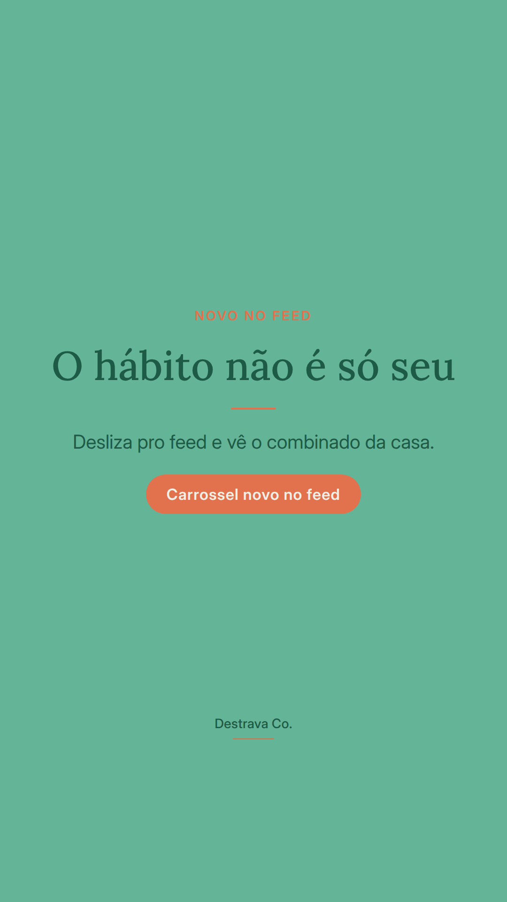
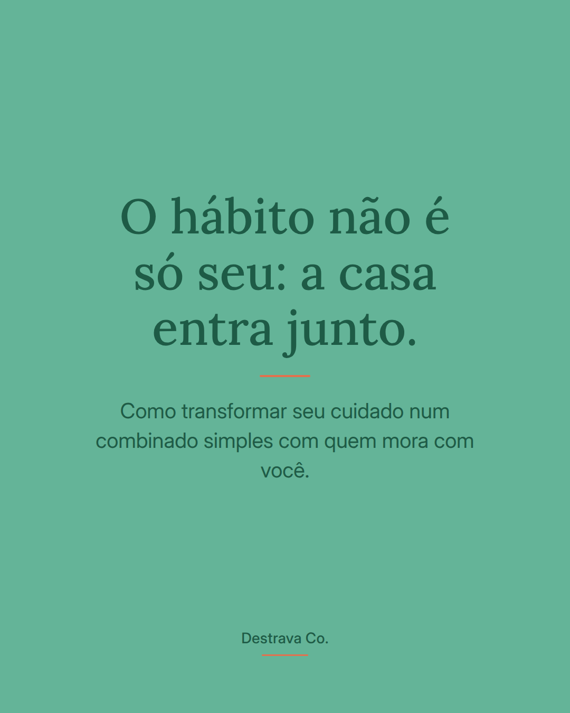
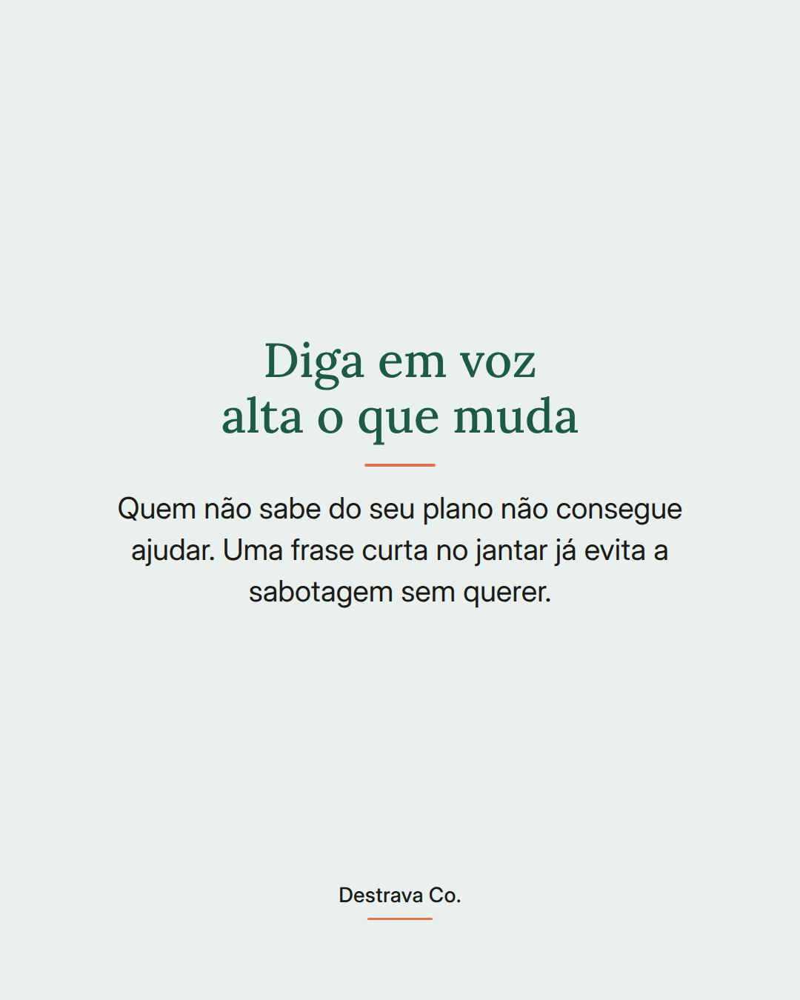
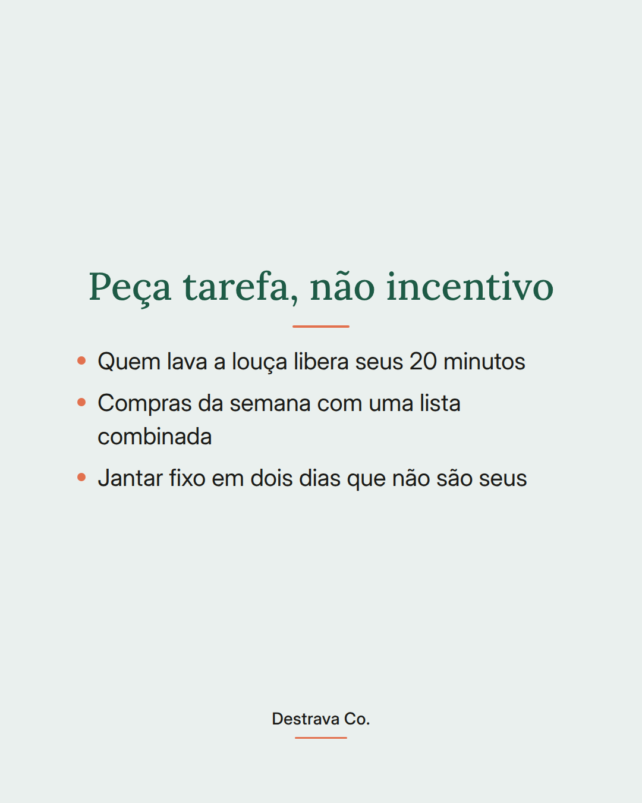
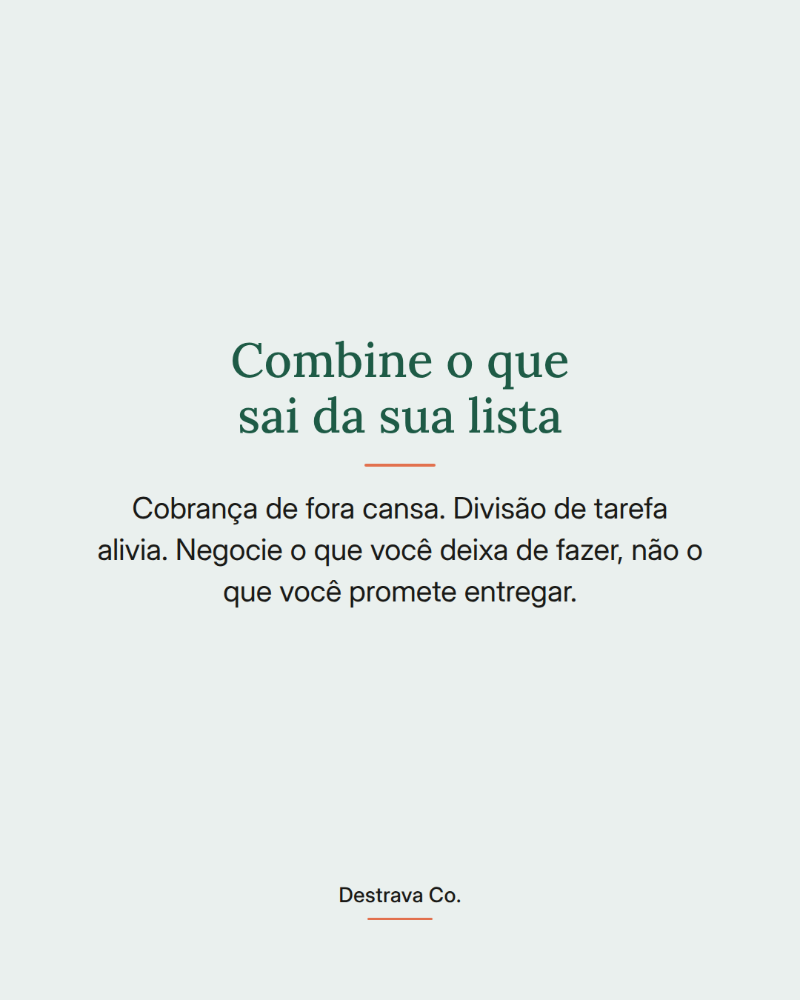
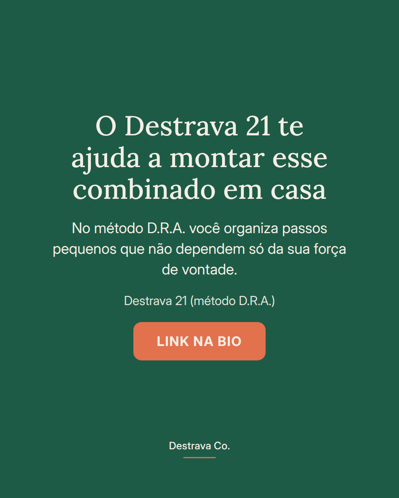

Seu hábito não precisa depender só da sua força de vontade.
Quando a casa sabe do combinado, cuidar do corpo deixa de ser mais uma tarefa acumulada no seu dia. A conversa é simples: o que muda na sua rotina e o que pode sair da sua lista pra caber esse tempo.
Peça tarefa concreta, não incentivo. Alguém lava a louça, alguém assume dois jantares da semana, a lista de compras vira combinado e não improviso. É menos coisa na sua cabeça e mais chance de manter o passo nos dias corridos.
E quando escorregar, não é recomeçar do zero: é revisar o combinado.
Salva pra lembrar e manda pra quem divide a casa com você. Se quiser um caminho organizado, o Destrava 21 te mostra o método D.R.A. passo a passo.